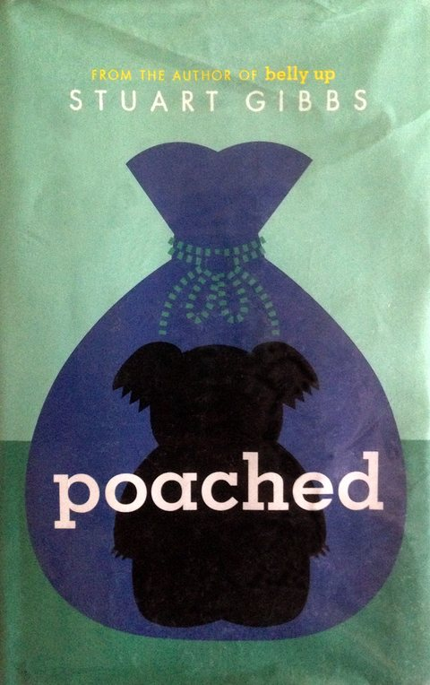

Summary
Reading about Kazoo's disappearance from FunJungle made me want to know immediately want happened. I felt frustrated on Teddy’s side because everyone unfairly blamed him for the crime. Looking into the investigation made me want to turn the pages as fast as I could. Discovering the details behind the theft eventually left me feeling completely bamboozled, because it had been someone i would have never suspected. In the end, I felt a sense of relief and justice because he had finally caught the real thief.
What I Learned
I learned that pandas can eat meat and that only bull sharks and great white sharks will try to eat a human
My Rating
⭐⭐⭐⭐⭐
Favorite Quote
"In fact, koalas spend so little time thinking, their brains actually appear to have shrunk over the last few centuries; the koala is the only known animal whose brain only fills half of its skull." p.16
← Back to My Library